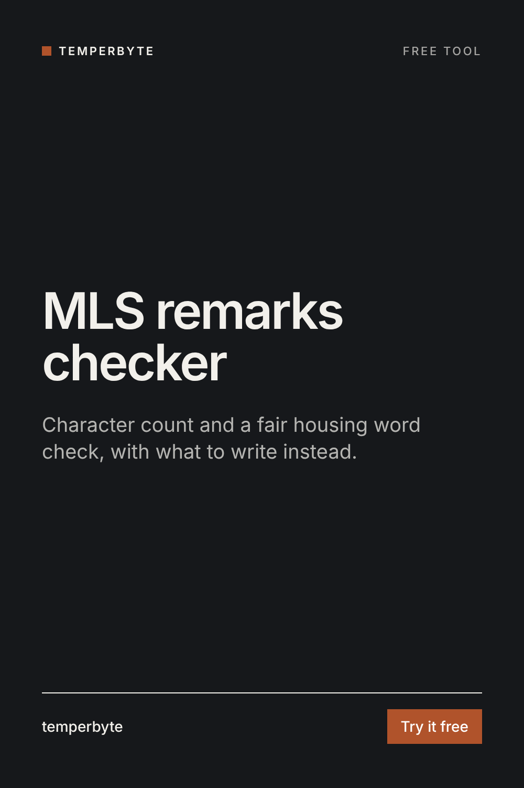

Paste your listing description. You get the character count against your MLS limit and every phrase that can cause fair housing trouble, with what to write instead.
Describe the property, not the people who should live in it. The checker looks for four kinds of phrases that fair housing guidance warns about, plus a few weak openers:
Facts about the property and the area: "0.4 miles to Cedar Park", "family room" as the name of a room, and accessibility features stated plainly, such as "no-step entry" or "grab bars in the primary bath".
Each MLS sets its own limit for public remarks, and some count spaces while others do not. Check yours and enter it above. The count updates as you type.
A first-pass word check, not legal review. It can't judge context, and no list catches everything. Under US federal law the protected classes are race, color, religion, sex, disability, familial status and national origin; state and local laws often add more. Follow your brokerage's policy.
Writing listings every week? The Listing Writer skill for Claude turns rough property notes into MLS remarks, headlines, a website description and a social caption, with this fair housing check built in and a list of facts to verify before you publish.
See Listing WriterOr try the free lite version.
